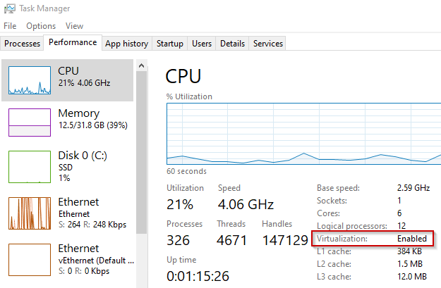

Installing K2s
Prerequisites
- K2s folder being available locally, see Getting K2s
- The Windows host must match one of the Supported OS Versions
- Local admin permissions are currently needed in order to be able to create virtual switches, VMs, etc.
- Please try to install from an folder which is available on
C:\drive, since most open-source components assume this. We are testing the solution also on other drives, but cannot guarantee that the cluster will work fully. - Hardware: The system should offer at least 2GB RAM free, as well as 10GB disk space free. Recommended are at least 6 CPU cores, but less are possible.
- CPU virtualization must be enabled in the BIOS. To verify, open the Task Manager and check the Virtualization property on the Performance tab:

If you run the setup inside a VM, enable nested virtualization (e.g. when using Hyper-V:
, see Configure Nested Virtualization for details). - Docker (Desktop) must not be running. Either stop Docker and set it to start manually or uninstall it completely
- PowerShell execution policy must be RemoteSigned or less restrictive. To set the policy, run:
- curl.exe: the installed version in the Windows host must be at least 7.71.0 (to check it call
curl.exe --versionfrom the command shell). - Optional: ssh.exe: the installed version in the Windows host must be at least major version 8 to prevent the installation from hanging in certain situations (to check it call
ssh.exe -Vfrom the command shell). Normally, only Windows Server 2019 does not fulfill this requirement from the supported operating systems. - Optional: Enable required Windows Features beforehand (they will get enabled during the installation anyways, but would require a system restart and installation re-run):
- Windows 10/11
PowerShell
Enable-WindowsOptionalFeature -Online -FeatureName $('Microsoft-Hyper-V-All', 'Microsoft-Hyper-V', 'Microsoft-Hyper-V-Tools-All', 'Microsoft-Hyper-V-Management-PowerShell', 'Microsoft-Hyper-V-Hypervisor', 'Microsoft-Hyper-V-Services', 'Microsoft-Hyper-V-Management-Clients', 'Containers', 'VirtualMachinePlatform') -All -NoRestart - Windows Server OSs
-
Hyper-V configuration: after the enabling of Hyper-V on your host using Set-VMHost different settings can be configured for Hyper-V, for example in some cases it makes sense to have new default locations for virtual hard disks on that host. Please checkout all possibilities and configure Hyper-V on your host as wanted before doing an install of k2s !
-
Installing in WSL mode: Enable the WSL 2 feature on Windows. For detailed instructions, see Configure WSL or Manual install (older WSL versions)
-
VC Runtime 140: please install the VC runtime dlls, either with choco
choco install vcredist140 -y
or download them from Microsoft directly and install the appropriate VC runtime.
Tip
Environment variables HTTP_PROXY and HTTPS_PROXY shall not be used in Windows when creating a cluster. Usage of an HTTP proxy shall be configured in control panel at the network and internet section.
K2s will always take the proxy automatically from the Windows proxy configuration and will use that setting (in this case also local networks can be addressed).
Installation via k2s CLI
The K2s setup provides a variety of installation options. Based on the Hosting Variants, select one of the following setup variants:
- Option 1: Host (Default, Windows host acts as a worker node).
- Option 2: Development-Only (no K8s cluster, for building and testing containers only)
To inspect the different install options, run:
Warning
If the installer detects more than one k2s.exe in your system PATH, installation will fail.
Please review the error message for all detected k2s.exe locations and remove any outdated or duplicate directories from your PATH environment variable before retrying installation.
Info
By default, the installation assumes 6 CPU cores to be available on the host system. If less cores are available, reduce the number of virtual cores used by K2s according to the actual amount, e.g. when 4 cores are available, assign max. 4 virtual cores to K2s:
Tip
If you acquired K2s via Cloning the Git repository, you might want to checkout a specific version first, e.g.:
Note
K2s will start automatically after the installation has finished.
Installing Using Config Files
Instead of assembling many command-line parameters/flags to customize the installation, you can also pass a YAML file to the k2s install command configuring install parameters like node resource definitions (e.g. CPU, RAM or size of the hard drive):
Example
Create a custom install config:
| my_config.yaml | |
|---|---|
To create a user-defined configuration for any of the hosting variants, take one of the corresponding Base Configuration Files as a template.
Online vs. Offline
Downloading all dependencies (i.e. binaries) on-the-fly is referred to as online installation, whereas offline refers to an installation package containing parts of or all the dependencies. If K2s was acquired via Downloading the Official Release Package, parts of the dependencies are already available locally. If an offline package was create according to Creating Offline Package, all dependencies are available offline.
As per default, the k2s CLI keeps downloaded files as well as the Linux-based control-plane image and reuses them. To change this behavior, use the following CLI flags (they apply to all installation variants1).
To delete all downloaded binaries and the control-plane image after installation, run:
To force the download of all binaries and the re-creation of the control-plane image regardless of their local presence, run:
Offline vs. Online Installation Diagram
graph TD
CallScript["Installation scripts\n (Default, BuildOnlySetup)\n\n with\n [-DeleteFilesForOfflineInstallation]\n [-ForceOnlineInstallation]"] --> if_force_online_installation{"Switch\n ForceOnlineInstallation\n used ?"}
if_force_online_installation --> |yes| BuildAndProvisionKubemasterBaseImage
if_force_online_installation --> |no| if_base_image_available{"c\k\bin\Kubemaster-Base.vhdx\n available?"}
if_base_image_available --> |yes| CopyBaseImage
if_base_image_available --> |no| BuildAndProvisionKubemasterBaseImage
BuildAndProvisionKubemasterBaseImage("Build and provision base image") --> PublishBaseImage("Publish base image as\n c\k\bin\Kubemaster-Base.vhdx")
PublishBaseImage --> CopyBaseImage("Copy published base image to\n C\Users\Public\Documents\Hyper-V\Virtual hard disks")
CopyBaseImage --> InstallLinuxNode("Install Linux node")
InstallLinuxNode --> if_delete_files_for_offline_installation{"Switch\n -DeleteFilesForOfflineInstallation\n used ?"}
if_delete_files_for_offline_installation --> |yes| DeleteBaseImage("Delete file c\k\bin\Kubemaster-Base.vhdx")
if_delete_files_for_offline_installation --> |no| End
DeleteBaseImage --> End[Option 1] Host (Default)
Simply run:
WSL
To install the control-plane in WSL 2 instead of a dedicated Linux VM, run:
[Option 2] Development-Only
To build and test containers without a K8s cluster, run:
-
Creating of and installing from an offline package is currently supported for Host Variant and Development-Only only. ↩